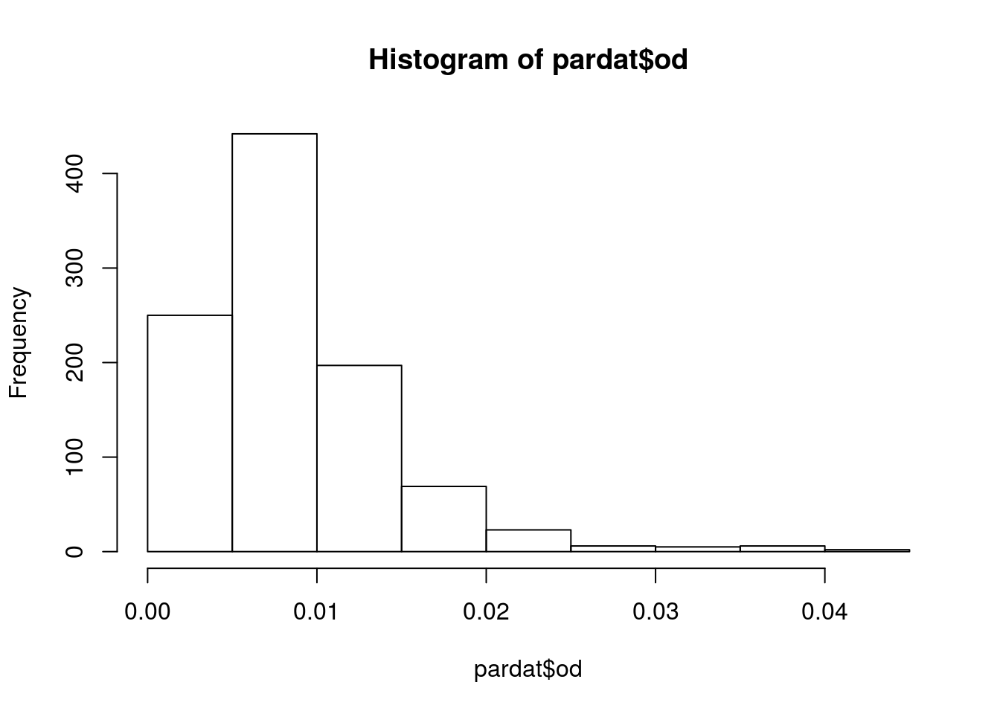
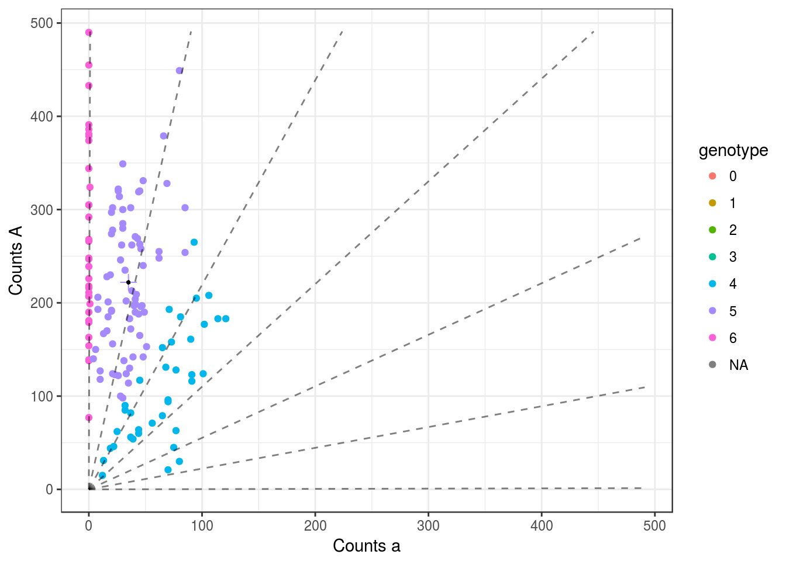
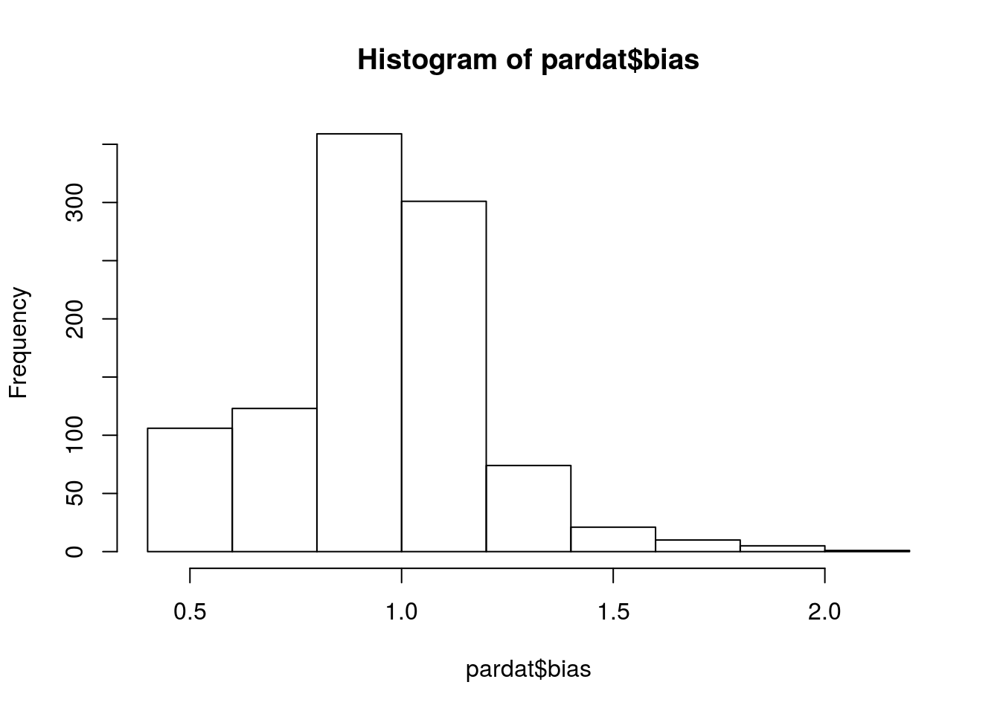
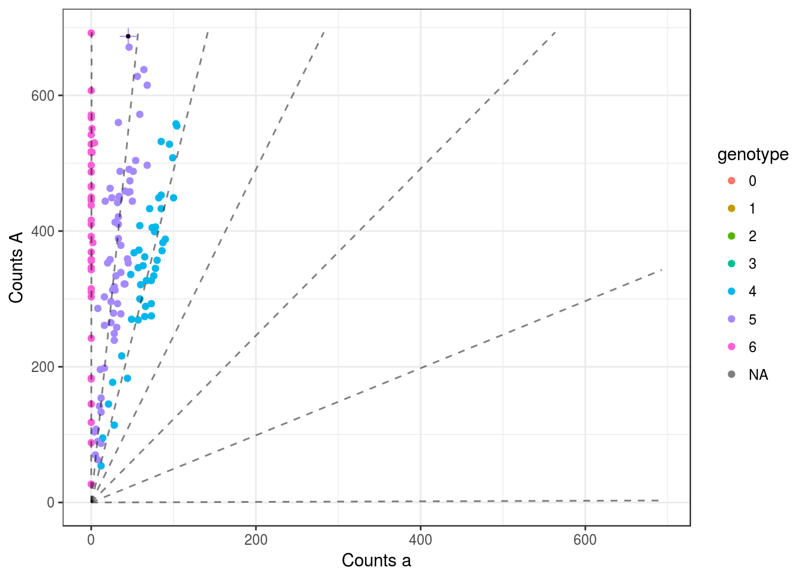
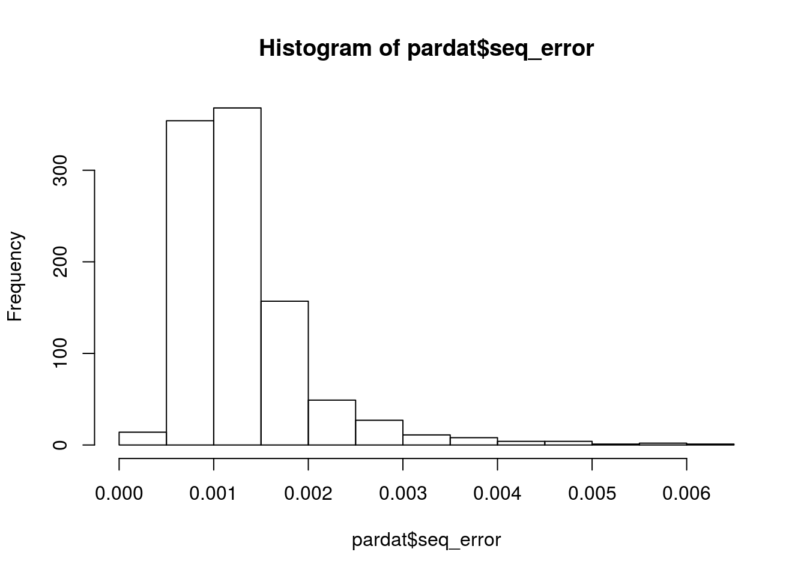
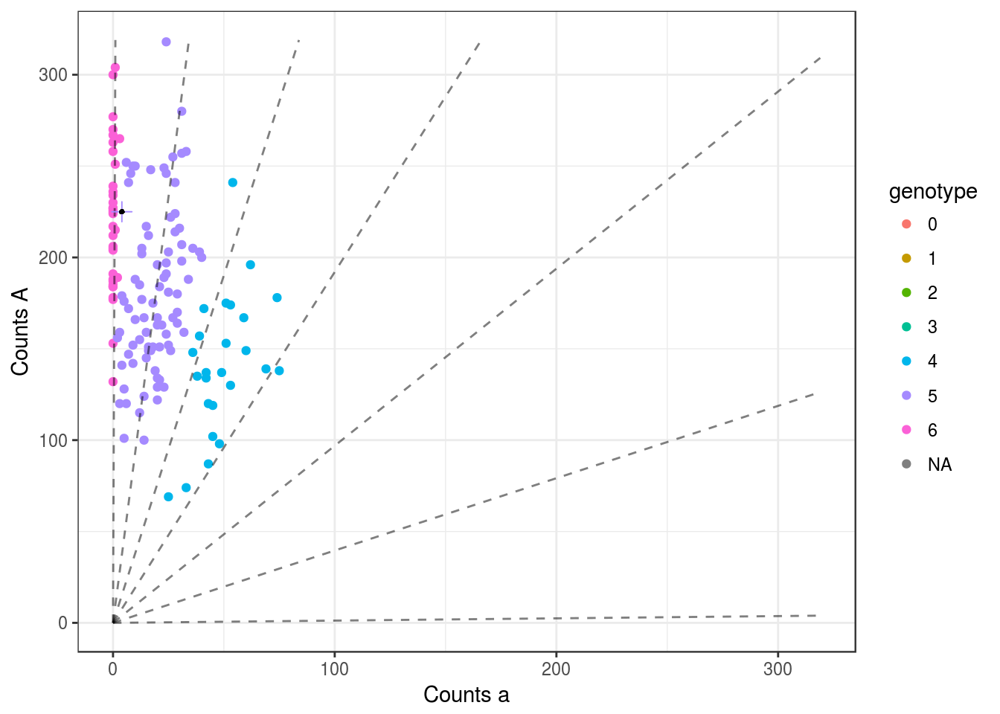
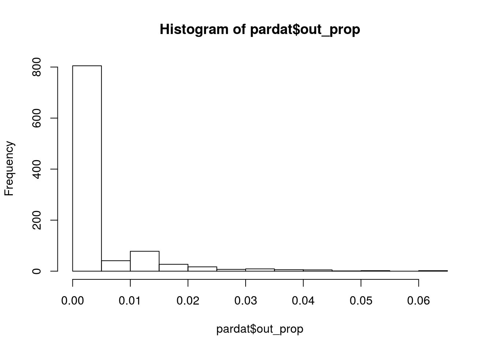
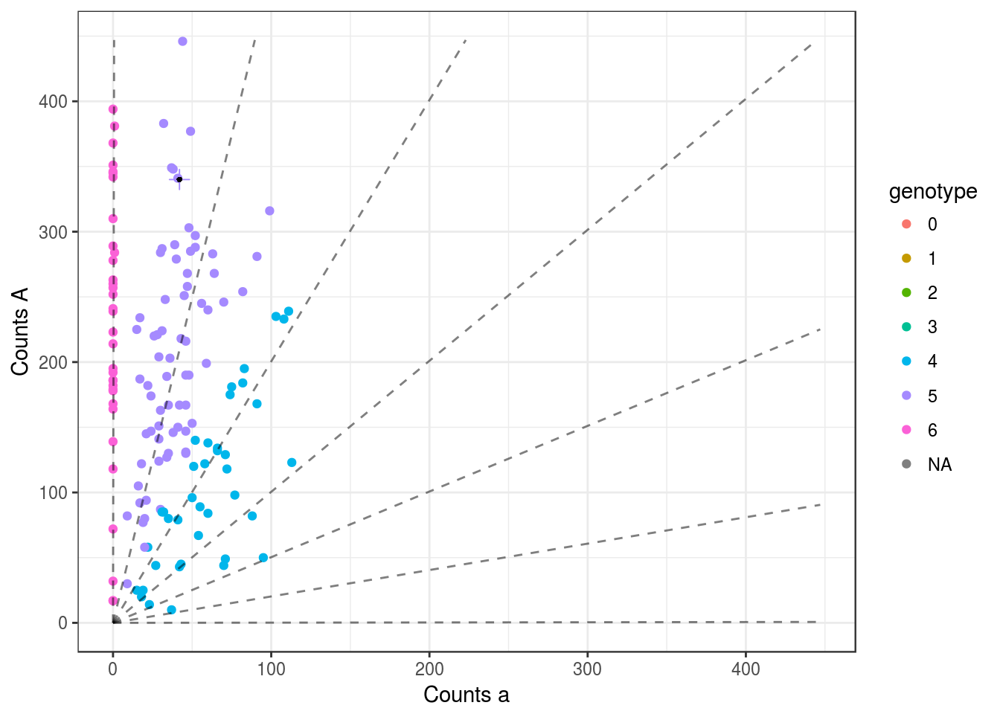
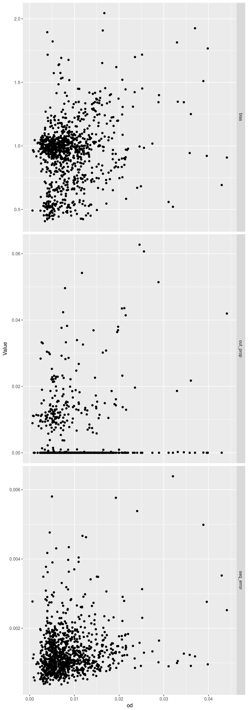

We explore the updog fits from the Shirasawa et al data.
library(updog)
library(tidyverse)## Loading tidyverse: ggplot2
## Loading tidyverse: tibble
## Loading tidyverse: tidyr
## Loading tidyverse: readr
## Loading tidyverse: purrr
## Loading tidyverse: dplyr## Conflicts with tidy packages ----------------------------------------------## filter(): dplyr, stats
## lag(): dplyr, statsnumfiles <- length(list.files("~/Code/reproduce_genotyping/Output/updog_fits/"))
parmat <- matrix(NA, nrow = numfiles, ncol = 6)
colnames(parmat) <- c("bias", "seq_error", "od", "pgeno", "out_prop", "allele_freq")
for (index in 1:numfiles) {
uout <- readRDS(paste0("~/Code/reproduce_genotyping/Output/updog_fits/uout", index, ".RDS"))
parmat[index, 1] <- uout$bias_val
parmat[index, 2] <- uout$seq_error
parmat[index, 3] <- uout$od_param
parmat[index, 4] <- uout$p1geno
parmat[index, 5] <- uout$out_prop
parmat[index, 6] <- uout$allele_freq
}
pardat <- as_data_frame(parmat)Shirasawa et al removed possible AAaaaa, AAAaaa, and AAAAaa parental genotypes.
unique(pardat$pgeno)## [1] 5 1Let’s look at the overdispersion parameter estimates:
hist(pardat$od) We don’t see anything like the estimates we see in the simulations when \(\tau = 0.1\), so it’s pretty safe to say that this data does not exhibit very large amounts of overdispersion, and we can be fairly trustworthy of the results.
The SNP with the largest OD estimate looks like this
uout <- readRDS(paste0("~/Code/reproduce_genotyping/Output/updog_fits/uout", which.max(pardat$od), ".RDS"))
plot(uout, plot_beta = FALSE, show_outlier = FALSE) We might want to remove this SNP. Not too sure.
The estimates of the bias:
hist(pardat$bias)
summary(pardat$bias)## Min. 1st Qu. Median Mean 3rd Qu. Max.
## 0.408 0.832 0.981 0.949 1.050 2.050The worst bias we see is \(h = 0.4\). This SNP looks like
uout <- readRDS(paste0("~/Code/reproduce_genotyping/Output/updog_fits/uout", which.min(pardat$bias), ".RDS"))
plot(uout, plot_beta = FALSE, show_outlier = FALSE)
This looks OK to me.
The sequencing error rate:
hist(pardat$seq_error)
The SNP with the largest sequencing error rate also has a large OD.
uout <- readRDS(paste0("~/Code/reproduce_genotyping/Output/updog_fits/uout", which.max(pardat$seq_error), ".RDS"))
plot(uout, plot_beta = FALSE, show_outlier = FALSE)
pardat$od[which.max(pardat$seq_error)]## [1] 0.03205hist(pardat$out_prop)
The SNP with the largest \(\pi\) also has a large amount of overdispersion.
uout <- readRDS(paste0("~/Code/reproduce_genotyping/Output/updog_fits/uout", which.max(pardat$out_prop), ".RDS"))
plot(uout, plot_beta = FALSE, show_outlier = FALSE)
pardat$od[which.max(pardat$out_prop)]## [1] 0.02458longdat <- pardat %>% select(od, bias, seq_error, out_prop) %>%
gather(key = "Parameter", value = "Value", bias:out_prop)
ggplot(data = longdat, mapping = aes(x = od, y = Value)) +
facet_grid(Parameter ~ ., scales = "free") +
geom_point()
There does seem to be a tiny amount of correlation between overdispersion and sequencing error rate and outlier proportion. But not enough to get excited about.
sessionInfo()## R version 3.3.2 (2016-10-31)
## Platform: x86_64-pc-linux-gnu (64-bit)
## Running under: Ubuntu 16.04.2 LTS
##
## locale:
## [1] LC_CTYPE=en_US.UTF-8 LC_NUMERIC=C
## [3] LC_TIME=en_US.UTF-8 LC_COLLATE=en_US.UTF-8
## [5] LC_MONETARY=en_US.UTF-8 LC_MESSAGES=en_US.UTF-8
## [7] LC_PAPER=en_US.UTF-8 LC_NAME=C
## [9] LC_ADDRESS=C LC_TELEPHONE=C
## [11] LC_MEASUREMENT=en_US.UTF-8 LC_IDENTIFICATION=C
##
## attached base packages:
## [1] stats graphics grDevices utils datasets methods base
##
## other attached packages:
## [1] dplyr_0.5.0 purrr_0.2.2 readr_1.0.0 tidyr_0.6.1
## [5] tibble_1.2 ggplot2_2.2.1 tidyverse_1.1.1 updog_0.1.0
##
## loaded via a namespace (and not attached):
## [1] Rcpp_0.12.11 plyr_1.8.4 forcats_0.2.0 tools_3.3.2
## [5] digest_0.6.12 lubridate_1.6.0 jsonlite_1.3 evaluate_0.10
## [9] nlme_3.1-131 gtable_0.2.0 lattice_0.20-34 psych_1.6.12
## [13] DBI_0.6 yaml_2.1.14 parallel_3.3.2 haven_1.0.0
## [17] xml2_1.1.1 stringr_1.2.0 httr_1.2.1 knitr_1.15.1
## [21] hms_0.3 rprojroot_1.2 grid_3.3.2 R6_2.2.0
## [25] readxl_0.1.1 foreign_0.8-67 rmarkdown_1.3 modelr_0.1.0
## [29] reshape2_1.4.2 magrittr_1.5 ggthemes_3.4.0 backports_1.0.5
## [33] scales_0.4.1 htmltools_0.3.5 rvest_0.3.2 assertthat_0.2.0
## [37] mnormt_1.5-5 colorspace_1.3-2 labeling_0.3 stringi_1.1.2
## [41] lazyeval_0.2.0 munsell_0.4.3 broom_0.4.2This R Markdown site was created with workflowr